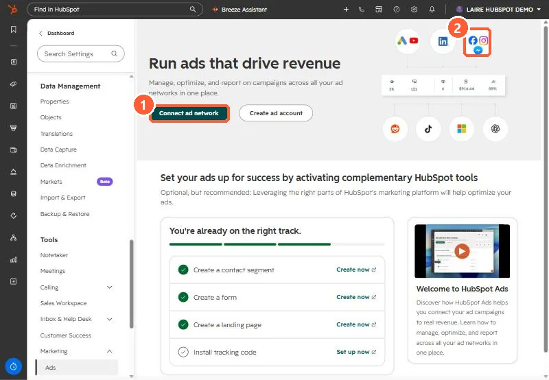

Short answer
In Settings > Marketing > Ads > Lead syncing, connect the Facebook page. HubSpot then creates a version of each active lead form. These forms do not show in the forms tool, but their submissions log as form submissions you can use in segments and workflows. New leads can take up to two hours to arrive. If nothing arrives, check that you had Leads Access in Meta when connecting, that HubSpot is the CRM selected in the page's CRM setup, and that the sync timeframe is All leads.
1. Start in ads settings
My demo portal has no ad accounts connected, so the ads settings page shows the connect prompt. Lead syncing appears once an account is connected.


2. How the data lands
- Each synced lead form becomes a hidden HubSpot form. Archive the form in Meta to remove it.
- Default Facebook fields always map to the matching HubSpot property. Custom questions can be remapped. The field types must match, or the Lead syncing tab shows errors.
- One workflow can cover many ads if its trigger lists each synced lead form.
3. When leads do not arrive
- No Leads Access in Meta business manager at connection time: new leads sync after you get it, but reconnect to pull older ones.
- The form must be created in the connected Meta account and run under the connected page.
- Sync timeframe set to New leads: disconnect and reconnect with All leads for history.
For the account connection itself, see connecting ad accounts.